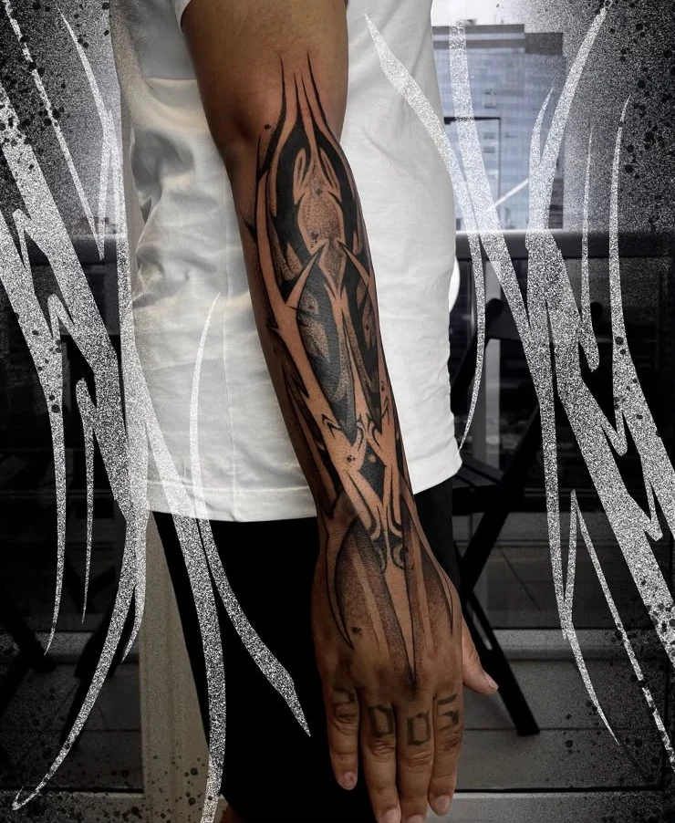
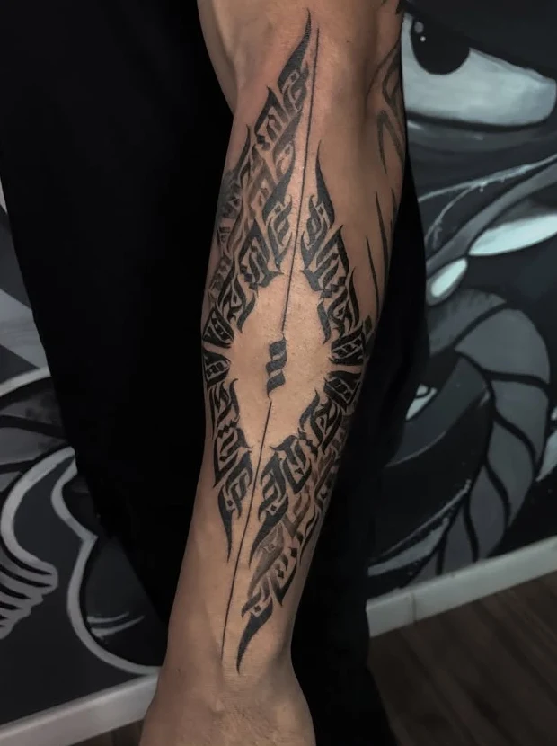
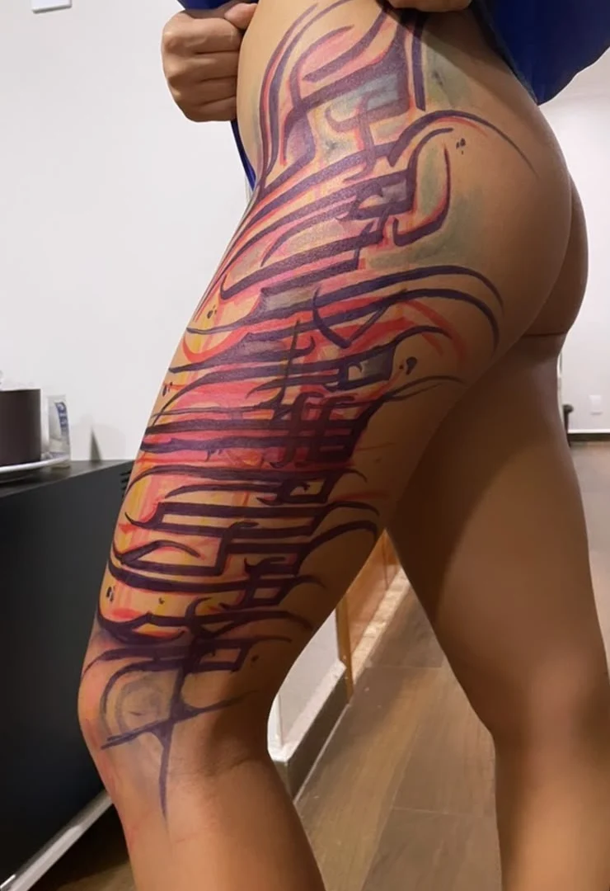
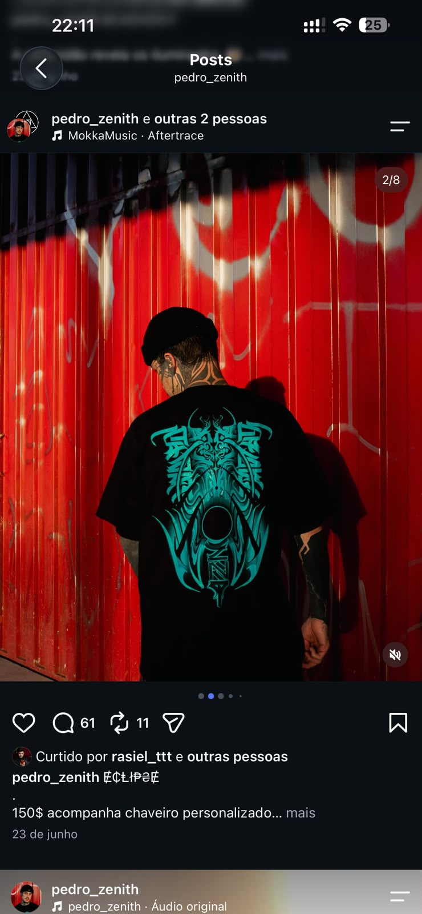

Fluxo
contínuo.
Ornamental · Freehand
Braço e mão

As pontas continuam.
O vazio também desenha.
Freehand, dark lettering e blackout.
Tatuagem autoral em Brasília.
Ornamental · Freehand
Braço e mão

As pontas continuam.
O vazio também desenha.
A escrita envolve um centro de pele.
O desenho encontra espaço no negativo.

Blackout · Panturrilha
Uma massa contínua acompanha
o volume da perna.

O freehand começa
diretamente na pele.

Curvas, volumes e movimento participam do desenho. A composição se ajusta à anatomia.
O traço fora da pele.

Preto.
Vermelho.
Outra superfície.
O repertório ornamental
também encontra a roupa.
Mais do universo no Instagram“Ainda tenho
Pedro Zenith, em um post sobre sua trajetória.
um universo
pra aprender.”
Workshop com Pedro Zenith · Para tatuadores
Uma aproximação com as decisões que vêm antes da tinta.
Preencha o formulário de interesse. As informações do encontro são compartilhadas pelo WhatsApp.